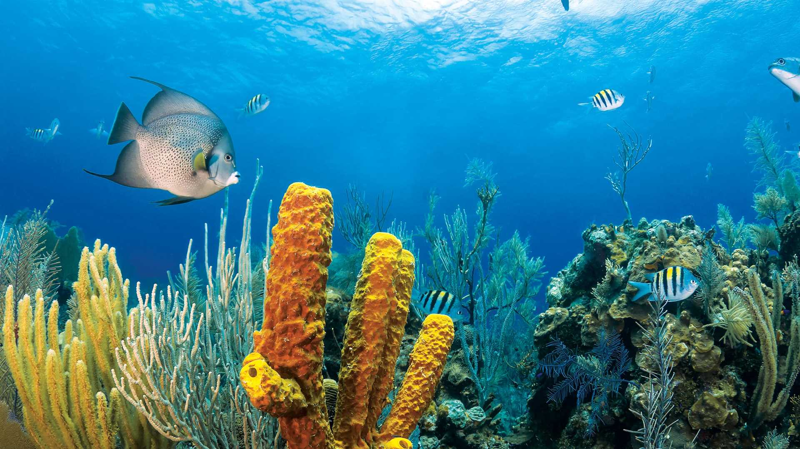
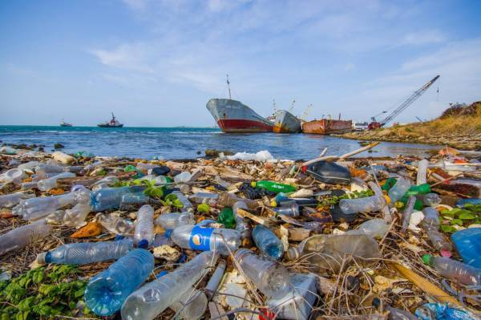

Kondisi Saat Ini
Perairan Indonesia dikenal kaya akan sumber daya ikan dan hasil laut lainnya. Banyak wilayah perairan di Indonesia yang menjadi sumber mata pencaharian utama bagi nelayan. Sektor perikanan, pariwisata bahari, dan transportasi laut juga menjadi sumber ekonomi terutama bagi masyarakat pesisir. Beberapa daerah juga memiliki laut yang jernih dan ekosistem bawah laut yang masih terjaga dengan baik. Program pengelolaan laut berkelanjutan mulai diterapkan melalui pendekatan ekonomi biru dan penetapan wawasan konservasi laut untuk menjaga keseimbangan antara pemanfaatan dan pelestarian sumber daya laut.
Namun, kondisi laut di beberapa wilayah Indonesia sedang tidak baik-baik saja. Di beberapa daerah, kondisi laut Indonesia memiliki kemajuan dalam pengelolaan dan perlindungan ekosistem laut, tetapi juga masih banyak tantangan besar yang perlu diatasi seperti beberapa daerah pesisir, warna air laut sudah tidak jernih akibat aktivitas manusia seperti limbah domestik dan pembangunan di pesisir serta ekosistem mangrove dan terumbu karang mengalami penurunan luas akibat alih fungsi lahan dan aktivitas penangkapan ikan yang merusak lingkungan.